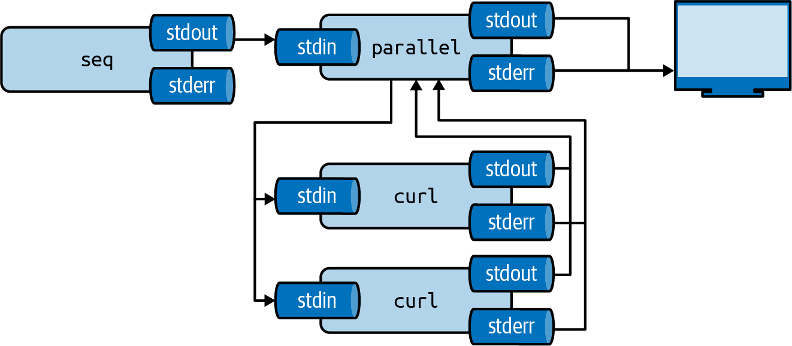

8 Serial and Parallel Data Pipelines
Computational data science pipelines routinely handle computationally intensive tasks: iterating over thousands of URLs, parsing gigabytes of server logs, computing cross-validated machine learning benchmarks, or applying image processing algorithms across thousands of images.
When tasks are executed sequentially (in series), throughput is bound
by a single CPU core, leaving the remaining cores of modern multicore
processors idle. In this chapter, we explore how to parallelize
pipelines using Nushell native multi-threaded iterator
par-each as well as the external process
parallelizer GNU parallel.
We begin by navigating into /data/ch08:
cd /data/ch08From this point forward, commands in this chapter execute within
/data/ch08. Let us inspect the available files:
ls8.1 Serial Processing: Iterating
Over Data with each
The each command iterates sequentially over elements in
a collection, list, or table, evaluating a closure for each element and
emitting results in original input order.
Consider evaluating an integer sequence from 1 to 10 to identify multiples of 3:
1..10 | each {|x| {n: $x, cuadrado: ($x * $x), es_mult_3: (($x mod 3) == 0)} }
1..10 | each {|x| {n: $x, cuadrado: ($x * $x), es_mult_3: (($x mod 3) == 0)} } | save -f squares_table.csvFor high-precision mathematical operations, external utilities like
bc -l can be invoked from within
closures:
1..5 | to text | pbc "{1}^2" | lines | each {|v| $v | into int }8.1.1 Iterating Over Lines and Rows
When iterating over structured datasets, each receives
entire records, granting access to individual fields via record dot
notation. Here, we iterate over input.csv:
open --raw movies.txt | lines | enumerate | each {|row| {idx: $row.index, movie: ($row.item | str trim), chars: ($row.item | str length)} }
open --raw movies.txt | lines | enumerate | each {|row| {idx: $row.index, movie: ($row.item | str trim), chars: ($row.item | str length)} } | save -f movies_summary.csv8.1.2 Iterating Over Files
To process collections of files sequentially, we pipeline directory
listings from ls into each, transforming and
persisting each artifact:
ls *.csv | each {|f| {archivo: $f.name, bytes: $f.size, filas: (open $f.name | length)} }
ls *.csv | each {|f| {archivo: $f.name, bytes: $f.size, filas: (open $f.name | length)} } | save -f csv_inventory.csv8.2 Parallel Processing in Nushell
with par-each
While each processes items sequentially,
par-each distributes closures across an
asynchronous thread pool, processing multiple items concurrently across
available CPU cores.

To quantify performance differences between serial and parallel
execution, we use timeit:
1..4 | par-each --threads 4 {|i| {job: $i, msg: $"Tarea ($i) completada"} }
1..4 | par-each --threads 4 --keep-order {|i| {job: $i, cuadrado: ($i * $i)} } | save -f parallel_jobs.csv8.2.1 Concurrent Execution and Thread Control
Two essential flags govern par-each behavior:
--threads(-t): Restricts the maximum number of concurrent threads allocated to the execution pool.--keep-order(-k): Guarantees that outputs appear in the exact order of the input collection, even if worker threads complete out of sequence.
8.3 Process Parallelization with
GNU parallel from Nushell
When parallelization involves coordinating external CLI binaries,
legacy shell scripts, or distributing work across remote networked
clusters via SSH, GNU parallel provides an
industrial-grade workload manager.

8.3.1 Specifying Arguments and Replacement Tokens
GNU parallel utilizes positional token placeholders to
inject arguments into target commands:
{}: Complete input argument string.{/}: Filename basename with directory components stripped.{.}: Filename stem with directory intact but final extension stripped.{/.}: Basename with both parent directory and extension stripped.{#}: Incremental job sequence number.
We can invoke parallel directly from Nushell, piping its
output into a structured table:
open input.csv
open --raw input.csv | parallel --colsep ',' --header : "echo {name}:{quantity}" | lines | where ($it | str contains ":") | split column ":" nombre cantidad | collect | save -f input_parallel.csv
open input_parallel.csv8.3.2 Controlling Concurrent Jobs
By default, GNU parallel spawns one worker job per CPU
core. The --jobs (-j) flag adjusts concurrency
explicitly (e.g., -j 4, -j 200%, or
-j +2):
1..4 | to text | parallel -j 4 "sh slow.sh {}" | lines8.3.3 Output Logging and Tagging
When multiple background processes write to standard output concurrently, their emissions can become interleaved.

GNU parallel prevents interleaved corruption by
capturing process buffers and emitting complete outputs per job. Useful
control flags include:
--keep-order(-k): Emits output in input order.--tag: Prefixes each output line with its input argument.--results <dir>: Directs stdout, stderr, and exit codes into a structured directory hierarchy.
We run parallel with
--results salida_parallel and parse the generated records
directly in Nushell:
1..5 | to text | parallel -k --tag "echo $(( {} * 10 ))" | from tsv --noheaders | rename arg resultado
1..5 | to text | parallel -k --tag "echo $(( {} * 10 ))" | from tsv --noheaders | rename arg resultado | save -f tagged_output.csvWe can likewise combine parallel with utilities like
seq, bc, or
jq:
["Nushell", "Polars"] | str join "\n" | parallel -k "cowsay {}"8.3.4 Parallel Tools and Block Processing
When processing massive single files (such as a multi-gigabyte CSV or
JSON stream), parallelizing line-by-line is inefficient. The
--pipe flag partitions input streams into
multi-megabyte blocks, feeding each block to a separate worker
process:
open --raw movies.txt | parallel --pipe -N 3 "wc -l" | lines | each {|x| $x | str trim | into int } | math sum8.4 Distributed Computing Across Multiple Nodes
Beyond single-machine multicore execution, GNU parallel
can distribute computations across clusters of remote servers using
SSH.
8.4.1 Discovering Active Cluster Nodes
Cluster node hostnames or IP addresses can be enumerated in a
configuration file (~/.parallel/cluster_hosts or
/data/ch08/servers.txt).
8.4.2 Running Commands Across All Cluster Nodes
To audit operating system metrics or check software versions across all cluster nodes:
parallel --nonall --slf hosts.txt "nu --version"8.4.3 Distributing Local Data Streams Across Cluster Nodes
To stream local data chunks across cluster nodes for distributed processing:
cat gran_dataset.csv | parallel --pipe --header : --block 50M --slf hosts.txt "nu -c \"from csv | where amount > 100 | to csv\"" > filtrado_distribuido.csv8.4.4 Processing Files on Remote Nodes
GNU parallel can automatically upload input files to
remote nodes via SCP/rsync, execute analytical workloads remotely, and
transfer result files back to the local coordinator:
ls *.csv | parallel --slf hosts.txt --transferfile {} --return {.}_clean.csv "nu limpiar_lote.nu {} {.}_clean.csv"8.5 Summary
Parallel processing accelerates computationally intensive data
science pipelines by fully utilizing modern multicore and networked
hardware. Nushell native par-each provides
zero-overhead in-memory concurrency for internal table and collection
transformations. For orchestrating external binaries, batch file
transformations, or distributed cluster computing across SSH nodes,
GNU parallel pairs seamlessly with Nushell
pipelines.